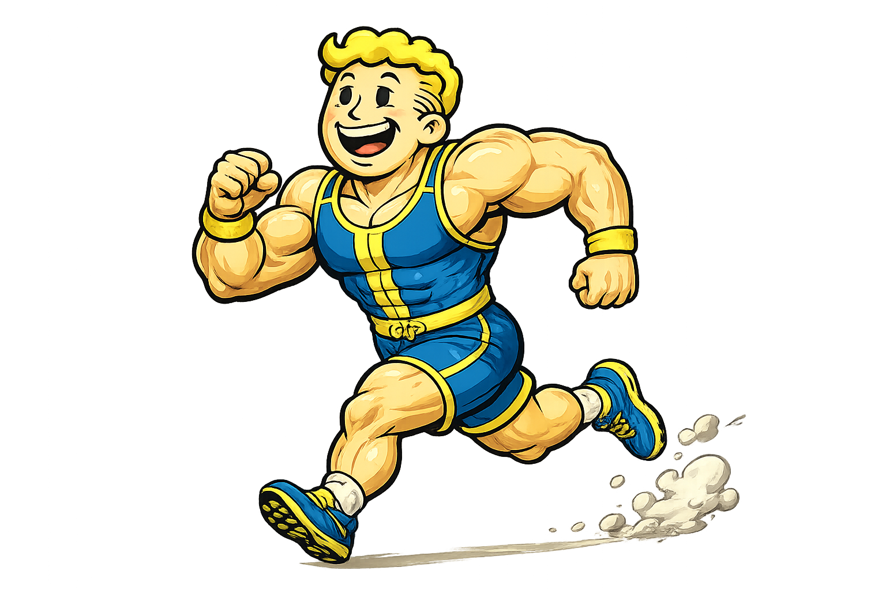
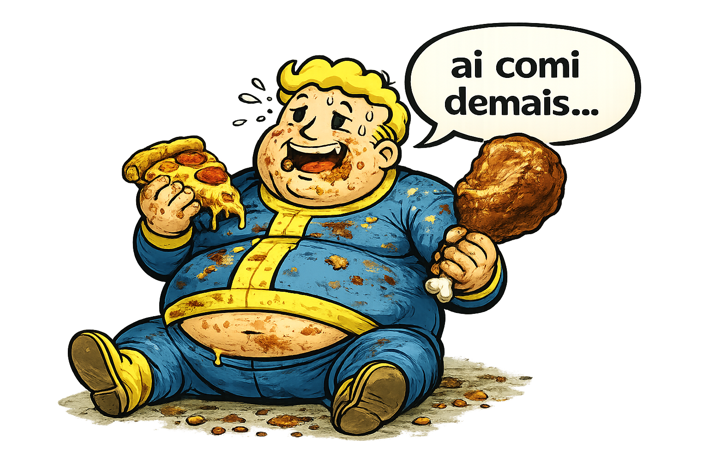
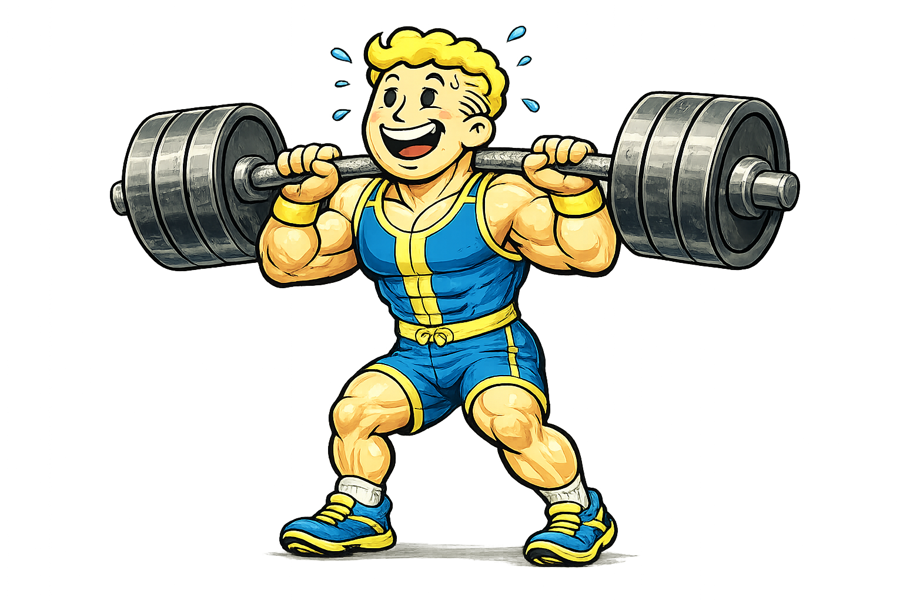
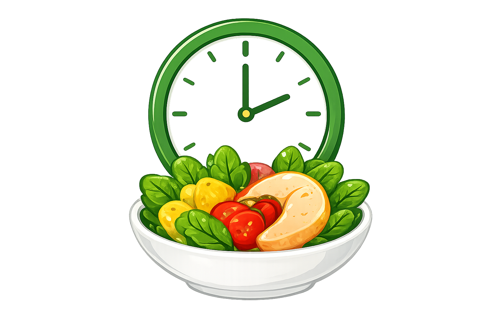

Entenda a relação entre a
alimentação e o gasto calórico.
Descubra quando você
consome, quanto precisa
gastar
e como
equilibrar sua rotina de forma
simples, saudável e consciente.


Pequenas escolhas hoje,
grandes transformações amanhã.
Sobre nós
Nossa História
Somos um grupo formado por
Eduardo, Ially, Ione e Vinicius, unidos pelo
interesse em tornar a nutrição mais simples, prática e acessível
para todos. Criamos o Comer para Gastar com o objetivo de mostrar,
de forma clara, como a alimentação está diretamente ligada à energia
que usamos no dia a dia.
Acreditamos que entender o que comemos é essencial
para uma vida mais equilibrada, por isso nossa página busca
compartilhar informações úteis, dicas e conteúdos que ajudam as
pessoas a fazerem escolhas mais conscientes, sem
complicação.
2026
Nos conhecemos no Senac, em Arapiraca - AL, onde surgiu a ideia de
desenvolver este projeto como parte da criação de um site. A partir
dessa iniciativa, unimos nossos conhecimentos e interesses para dar
vida ao
Comer para Gastar, transformando o trabalho em uma
experiência prática de aprendizado e colaboração.
💚
Nutrição descomplicada
🍃
Escolhas conscientes
🔥
Mais energia no dia a dia
🏃
Aprendizado e colaboração
Dicas Úteis
Pequenas mudanças, grandes resultados.
Beba 3 litros de água por dia
Manter-se hidratado melhora sua saúde, disposição e concentração.

Faça exercícios físicos
Atividades físicas fortalecem o corpo, melhoram o humor e aumentam a
energia.

Coma de 3 em 3 horas
Manter uma alimentação regular evita excessos e mantém seu corpo
ativo.


 2026
2026